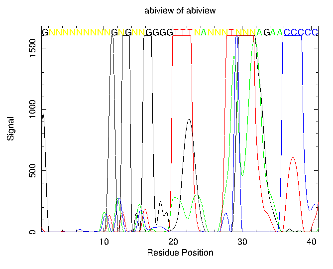

|
|
abiview |
Please help by correcting and extending the Wiki pages.
abiview reads in an ABI sequencer trace file and graphically displays the data. The probabilities of each of the 4 nucleotide bases along the sequencing run is plotted and the assigned nucleotide (G, A, T, C or N) from the ABI file is overlayed on the graphs. The complete sequence is written to an output file.
% abiview -graph cps Display the trace in an ABI sequencer file ABI sequencing trace file: abiview.abi nucleotide output sequence [abiview.fasta]: Created abiview.ps |
Go to the input files for this example
Go to the output files for this example
Display the trace in an ABI sequencer file Version: EMBOSS:6.5.6.0 Standard (Mandatory) qualifiers: [-infile] infile ABI sequencing trace file [-outseq] seqout [ |
| Qualifier | Type | Description | Allowed values | Default |
|---|---|---|---|---|
| Standard (Mandatory) qualifiers | ||||
| [-infile] (Parameter 1) |
infile | ABI sequencing trace file | Input file | Required |
| [-outseq] (Parameter 2) |
seqout | Nucleotide sequence filename and optional format (output USA) | Writeable sequence | <*>.format |
| -graph | xygraph | Graph type | EMBOSS has a list of known devices, including ps, hpgl, hp7470, hp7580, meta, cps, x11, tek, tekt, none, data, xterm, png, gif, pdf, svg | EMBOSS_GRAPHICS value, or x11 |
| Additional (Optional) qualifiers | ||||
| -startbase | integer | First base to report or display | Integer 0 or more | 0 |
| -endbase | integer | Last sequence base to report or display. If the default is set to zero then the value of this is taken as the maximum number of bases. | Any integer value | 0 |
| -yticks | boolean | Display y-axis ticks | Boolean value Yes/No | No |
| -[no]sequence | boolean | Display the sequence on the graph | Boolean value Yes/No | Yes |
| -window | integer | Sequence display window size | Any integer value | 40 |
| -bases | string | Base graphs to be displayed | Any string, matching regular expression /[GATC]+/ | GATC |
| Advanced (Unprompted) qualifiers | ||||
| -separate | boolean | Separate the trace graphs for the 4 bases | Boolean value Yes/No | No |
| Associated qualifiers | ||||
| "-outseq" associated seqout qualifiers | ||||
| -osformat2 -osformat_outseq |
string | Output seq format | Any string | |
| -osextension2 -osextension_outseq |
string | File name extension | Any string | |
| -osname2 -osname_outseq |
string | Base file name | Any string | |
| -osdirectory2 -osdirectory_outseq |
string | Output directory | Any string | |
| -osdbname2 -osdbname_outseq |
string | Database name to add | Any string | |
| -ossingle2 -ossingle_outseq |
boolean | Separate file for each entry | Boolean value Yes/No | N |
| -oufo2 -oufo_outseq |
string | UFO features | Any string | |
| -offormat2 -offormat_outseq |
string | Features format | Any string | |
| -ofname2 -ofname_outseq |
string | Features file name | Any string | |
| -ofdirectory2 -ofdirectory_outseq |
string | Output directory | Any string | |
| "-graph" associated xygraph qualifiers | ||||
| -gprompt | boolean | Graph prompting | Boolean value Yes/No | N |
| -gdesc | string | Graph description | Any string | |
| -gtitle | string | Graph title | Any string | |
| -gsubtitle | string | Graph subtitle | Any string | |
| -gxtitle | string | Graph x axis title | Any string | Residue Position |
| -gytitle | string | Graph y axis title | Any string | |
| -goutfile | string | Output file for non interactive displays | Any string | |
| -gdirectory | string | Output directory | Any string | |
| General qualifiers | ||||
| -auto | boolean | Turn off prompts | Boolean value Yes/No | N |
| -stdout | boolean | Write first file to standard output | Boolean value Yes/No | N |
| -filter | boolean | Read first file from standard input, write first file to standard output | Boolean value Yes/No | N |
| -options | boolean | Prompt for standard and additional values | Boolean value Yes/No | N |
| -debug | boolean | Write debug output to program.dbg | Boolean value Yes/No | N |
| -verbose | boolean | Report some/full command line options | Boolean value Yes/No | Y |
| -help | boolean | Report command line options and exit. More information on associated and general qualifiers can be found with -help -verbose | Boolean value Yes/No | N |
| -warning | boolean | Report warnings | Boolean value Yes/No | Y |
| -error | boolean | Report errors | Boolean value Yes/No | Y |
| -fatal | boolean | Report fatal errors | Boolean value Yes/No | Y |
| -die | boolean | Report dying program messages | Boolean value Yes/No | Y |
| -version | boolean | Report version number and exit | Boolean value Yes/No | N |
This file contains non-printing characters and so cannot be displayed here.
This file contains non-printing characters and so cannot be displayed here.
>abiview GNNNNNNNNNGNGNNGGGGTTTNANNNTNNNAGAACCCCCCTTNGAAAANNNCCACCCCA NNATAGTNGTANGAATAGTNCCCAGGCCANGCCTATCTGTGATGATTACATAGGCTAACA CATGACAAACATTTAAAAACACTAAACAATTGTTATTTATTCTTTGTTCCTATAAACCAC ACCCATTAAGCCCTTACTATATATAAGAGTTTTCAAGCCAAGAACCTGCTGCTTGGGAGG CTGATGCAGGAGAATTGCCAAGTACAAACCCTGCCTGGACTGTAAAGTGAAACCAAGGCT AGTTGTCTCACAATAAAAGATGAAGGGCAAGTGGGATCAATGCATAAAGGAGCTTGTGCC CAAGCCTGTTAGCCTTAGTTCAATTCCTGAGTACCATGAAAAGGTAGAAGGAGAGAAATG ATTTGGTACAATTTTTCTCTGTGCTGTGACACAGTACCACCCTCCTACTAATAACAAATA AAATAATGTTTAAAACAAAATAAAATAAAAATGGACTGGGATGTAGCACAATGGTAGGGT ACTTGCATAGCATGTACAAGGACCTGATTTCAATCCCCTGTGATAAAAGAAAATAAGGAA GGGAGGAAGCGTTAGGAGGAAAAATGGAATACAGAAGACACAGTGCATGGGAAGGATATG TATGTTATGAACACCAGAAATTCACTTGAAAATGAGTAAAATTTTTTTATTATTATATCA TTATTATTGGGGGGGATGTGGGCGGGGCTTGCAGAGGTATCTTTTAGAGGANGATCATTT TCCGGTTGTTGAGCAGGGCTCTGTTATGTAGGATATCTCAGANTAACAGACCCCAGGT |

The horizontal scale of the output image labelled 'Residue Position' is only a very approximate indication of the spacing of residues in the image. The real residue spacing is variable, as it relies on the speed with which the oligo-nucleotides are eluted in the ABI sequencer. Do not be surprised to see the nucleotide signals spaced at a much greater distance than the horizontal scale might suggest.
An ABI file (*.abi) contains sequence trace data and base calls from a run of an ABI nucleotide sequencer machine. A trace data file is what you get back from having some DNA sequenced, for example, by a 3730XL sequencer. The files are in "binary" format and so cannot be viewed directly on screen. To inspect the sequencing data you must use a trace viewer such as abiview. Another good trace viewer is FinchTV (http://www.geospiza.com/finchtv/). It is a stand-alone program and is freely available.
| Program name | Description |
|---|---|
| cirdna | Draw circular map of DNA constructs |
| coderet | Extract CDS, mRNA and translations from feature tables |
| entret | Retrieve sequence entries from flatfile databases and files |
| extractalign | Extract regions from a sequence alignment |
| iep | Calculate the isoelectric point of proteins |
| infoalign | Display basic information about a multiple sequence alignment |
| infoseq | Display basic information about sequences |
| lindna | Draw linear maps of DNA constructs |
| pepinfo | Plot amino acid properties of a protein sequence in parallel |
| pepnet | Draw a helical net for a protein sequence |
| pepwheel | Draw a helical wheel diagram for a protein sequence |
| plotorf | Plot potential open reading frames in a nucleotide sequence |
| prettyplot | Draw a sequence alignment with pretty formatting |
| prettyseq | Write a nucleotide sequence and its translation to file |
| refseqget | Get reference sequence |
| remap | Display restriction enzyme binding sites in a nucleotide sequence |
| seqxref | Retrieve all database cross-references for a sequence entry |
| seqxrefget | Retrieve all cross-referenced data for a sequence entry |
| showalign | Display a multiple sequence alignment in pretty format |
| showfeat | Display features of a sequence in pretty format |
| showpep | Display protein sequences with features in pretty format |
| sixpack | Display a DNA sequence with 6-frame translation and ORFs |
| variationget | Get sequence variations |
| whichdb | Search all sequence databases for an entry and retrieve it |
Please report all bugs to the EMBOSS bug team (emboss-bug © emboss.open-bio.org) not to the original author.